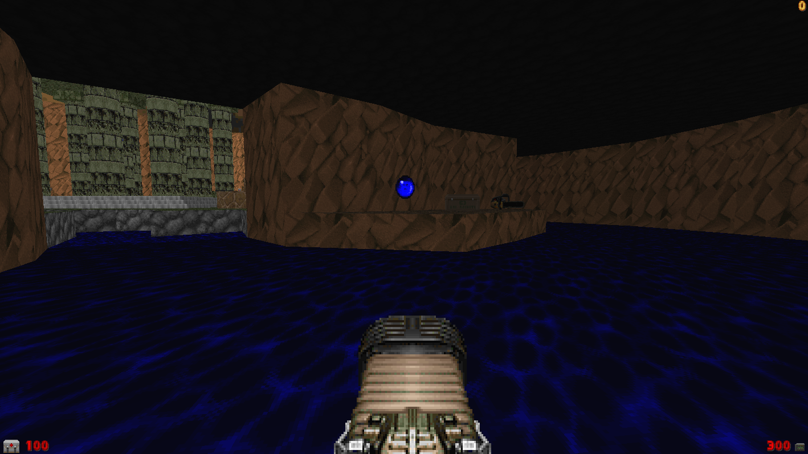
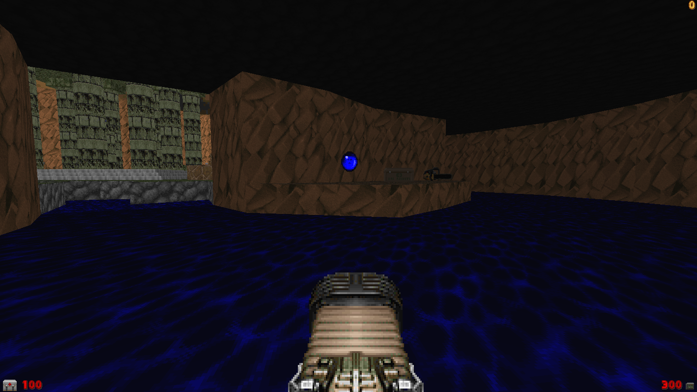

Did you know the ancient Greeks had BFGs and Super shotguns? You didn't, because that is a lie.
Until now..
Yup! The dream you never had has come true! Greece is a 12-player Deathmatch map for DOOM that runs in GZDoom.
It has a big temple in the middle, a small cave and other thingies. Have fun!
To run the map, drag the zip files to the GZDoom executable.
Then, set deathmatch to 1 using this command:
deathmatch 1
then, run "map map01"
 

Download DM_Greece.zip